Vellore Institute of Technology, Vellore
Ground Robot with Cloud-Based Control
(ESP32 + MQTT + Browser Dashboard)
Submitted by
| Name | Register No. |
|---|---|
| 1) Samay Ajay Sharma | 24BIT0308 |
| 2) Keshar Mishra | 24BIT0417 |
Small ground robots usually fail in one of two ways. Either they are driven over a short-range local link, so the operator must stay close, or they push all intelligence into the cloud, so a network drop makes them unsafe. This project builds a 4-wheel ground robot whose real-time control and safety run on an ESP32, while mapping, path planning and the operator dashboard run in the cloud (AWS EC2). The two sides talk over MQTT, and a network loss never leaves the robot driving unsupervised.
Functionalities (5 required, 6 listed):
Status: functionalities 1-3 are implemented and tested on the bench and through a live AWS EC2 broker (13-10-2026). Functionality 4 (incline compensation) is designed and specified in the invention disclosure (Form B) with its controller and safety clamps; 5 and 6 are designed (spec.md, plan.md) and not yet built.
Sensors - 5 Actuators - 3
| Sl. No | Sensor ID / Actuator ID | Sensor Name / Actuator Name | Sensor Usage |
|---|---|---|---|
| 1 | S1 | INA219 current sensor (2x, I2C 0x40 left, 0x41 right) | Per-side motor current: stall detection and the load signal for incline compensation |
| 2 | S2 | Bus voltage sensor (ESP32 ADC, resistor divider on GPIO34) | Battery/bus voltage for telemetry and brown-out detection |
| 3 | S3 | IMU (MPU-6050 class, I2C) [model TBD] | Pitch/roll for incline detection; gyro for dead-reckoning odometry |
| 4 | S4 | GPS module (UART) [model TBD] | Coarse outdoor position and goal context |
| 5 | S5 | Single-point range sensor (ToF or ultrasonic) [model TBD] | Distance readings; with A2 it forms a scan for SLAM, obstacle detection and Follow-me |
| 6 | A1 | 4 DC gearmotors via dual H-bridge driver (L298N-style: ENA/IN1/IN2, ENB/IN3/IN4) | Skid-steer locomotion; left pair and right pair each on one channel |
| 7 | A2 | Sweep servo [model TBD] | Pans S5 back and forth to emulate a 2D scan |
| 8 | A3 | Electromagnet with MOSFET driver and flyback diode | Pick up / release small magnetic payloads |
Controller: ESP32 (ESP32-D0WD-V3 on the bench). Items marked [TBD] are not yet chosen (UPDATES.md blocker 3).
The diagrams below show every connection to the ESP32 DevKit. Solid lines are wired and used by the firmware (embedded/web_drive/drive_core.h); dashed lines are the proposed connections for parts still to be added. Both INA219 current sensors, the IMU and the range sensor share the single I2C bus on GPIO21 (SDA) and GPIO22 (SCL), told apart by their addresses.
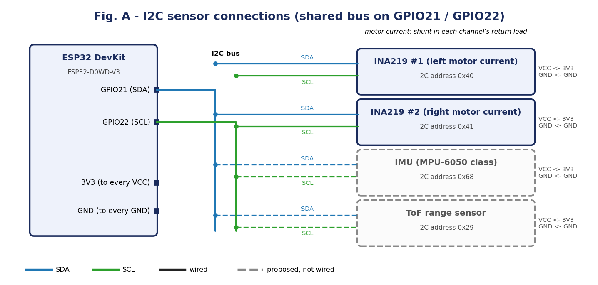
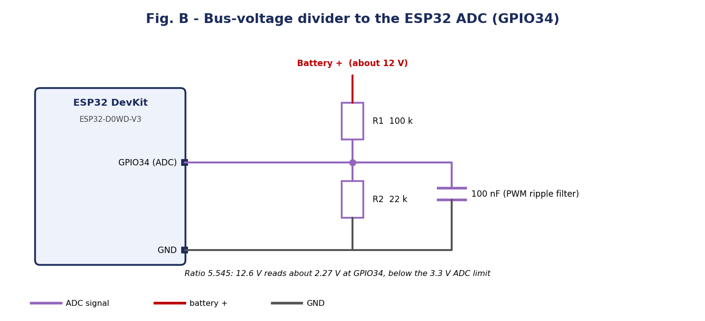
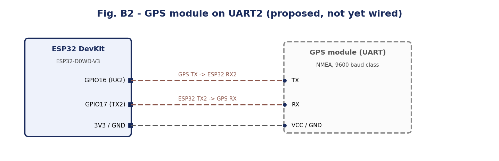
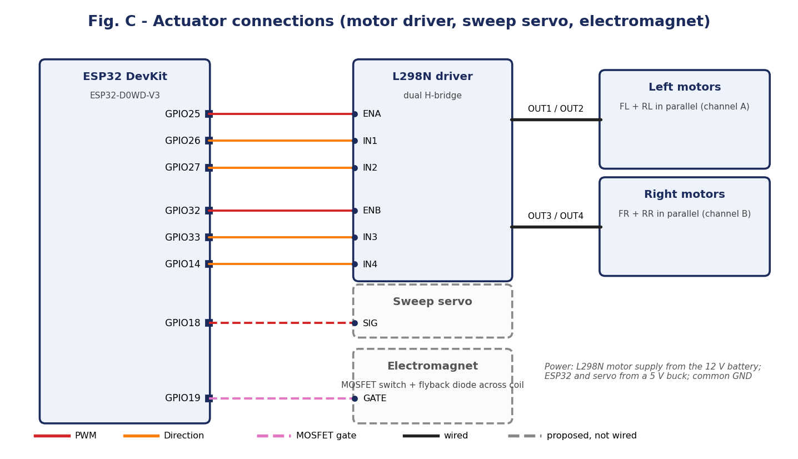
PWM runs at 1 kHz with 8-bit resolution (duty -255 to 255 per side). The driver's direction pins (IN1-IN4) set the polarity and the enable pins (ENA, ENB) carry the PWM.
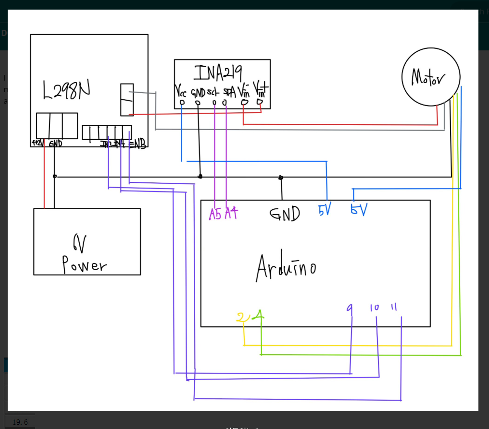
Figure 1 - Wiring of the L298N driver, INA219 current sensors, motors and controller as used on the bench
Each INA219 sits in the return lead of one motor channel (OUT1 to VIN+, VIN- to motor -), so it reads that side's total current; the left pair and right pair of motors are paralleled on one bridge channel each. The bus voltage is read through a 100 k / 22 k divider (ratio 5.545, trimmed against a multimeter) with a 100 nF filter capacitor, keeping the ADC below 3.3 V at full charge. PWM runs at 1 kHz, 8-bit.
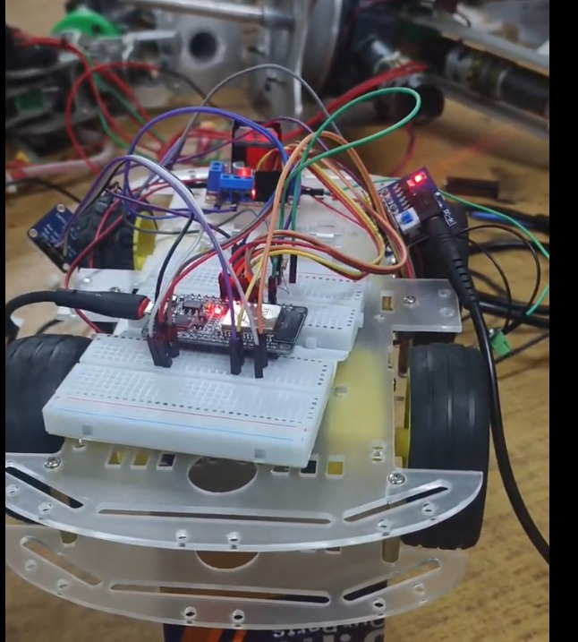
Figure 2 - Bench prototype: two-deck 4-wheel chassis with the ESP32 on a breadboard, two INA219 boards and the L298N driver
The EC2 side of this diagram is deployed and tested (t3.small, ap-southeast-2): Mosquitto with TLS 8883 and WSS 443 behind nginx, username/password authentication and a per-role ACL. SLAM Toolbox, Nav2 and D*-Lite are the next stage.
+-----------------------------+ +----------------------------------+
| ESP32 (on robot) | | AWS EC2 (planned) |
| - motor PWM + watchdog | MQTT over TLS | - Mosquitto broker (TLS + auth) |
| - current/voltage sensing | (ESP32 = Wi-Fi station,| - nginx serves dashboard |
| - mode state machine, | outbound connection) | - SLAM Toolbox, Nav2, D*-Lite |
| SAFE_HOLD (planned) | <-------------------> | - map store |
| - incline compensation | +----------------+-----------------+
| - sweep servo + range sensor| | HTTPS / WSS
+-----------------------------+ v
+-----------------------------------+
Topics: robot/robot1/drive (dashboard -> ESP32) | Browser dashboard (phone/laptop) |
robot/robot1/telemetry (ESP32 -> dashboard) | joystick, speed cap, telemetry |
planned: scan, odom, map, waypoints, mode +-----------------------------------+
Key design rule: the ESP32 owns real-time control and safety. The cloud supplies only heavy computation (maps, plans) and the operator interface, and is never in the fault-to-stop path. The fail-safe (stop within 1500 ms of command silence) is computed on the ESP32 alone.
| Layer | Component | Specification |
|---|---|---|
| Front end | Browser dashboard (cloud/dashboard/) | HTML, CSS and vanilla JavaScript; runs on any phone, tablet or laptop browser. MQTT over WebSocket using mqtt.js 5.10.1. |
| Controls | Virtual joystick mixed into differential drive (mix.js): left = (dy+dx)*255*cap, right = (dy-dx)*255*cap, clamped to [-255, 255]. Speed-cap slider (default 60%). | |
| Display | Telemetry dial (left/right current arcs, bus voltage, duty), battery gauge, connection ring. Marks the robot offline when telemetry is stale, separately from the broker connection state. | |
| Back end | Firmware (embedded/web_drive/) | Arduino C++ on ESP32: Wi-Fi station, PubSubClient MQTT, 1500 ms command watchdog, 200 ms telemetry period, INA219 and ADC drivers. Malformed or out-of-range commands are dropped without resetting the watchdog. |
| Message broker | Eclipse Mosquitto 2 in Docker for local testing (1883 TCP, 9001 WebSocket). The EC2 deployment adds TLS on 8883, WSS behind nginx on 443, and username/password auth with a per-role ACL (the robot account cannot publish drive commands). | |
| Cloud compute (planned) | AWS EC2 t3.small (ap-southeast-2), deployed and tested 13-10-2026: Mosquitto (TLS 8883, WSS 443 behind nginx, password auth, per-role ACL; ports 1883 and 9001 not reachable from the Internet), nginx serving the dashboard over HTTPS with a project CA certificate. SLAM Toolbox, Nav2 and a D*-Lite global planner are the next stage. |
Message formats
robot/robot1/drive {"left": 60, "right": 60}
robot/robot1/telemetry {"left_a":0.42,"right_a":0.39,"left_duty":60,"right_duty":60,"vbus":12.6}
| File | Role | Lines |
|---|---|---|
| embedded/web_drive/web_drive.ino | Setup, Wi-Fi join, main loop, 5 Hz telemetry timer | 77 |
| embedded/web_drive/mqtt_handler.h | MQTT client, drive subscription, telemetry publish, watchdog, reconnect | 180 |
| embedded/web_drive/drive_core.h | H-bridge PWM, INA219 and bus-voltage reads | 181 |
| cloud/dashboard/app.js, mix.js, mqtt_topics.js | Dashboard logic, joystick mixing, topic and message helpers | 217 / 13 / 65 |
| cloud/dashboard/index.html, style.css | Dashboard layout and styling | 49 / - |
| cloud/docker-compose.yml, cloud/mosquitto/mosquitto.conf | Local broker and dashboard test stack | - |
Key listing 1 - command watchdog (mqtt_handler.h)
static const uint32_t WATCHDOG_MS = 1500;
static void mqttWatchdogCheck() {
if (millis() - lastDriveMsgMs > WATCHDOG_MS) {
stopAll(); // no valid drive command for 1.5 s: stop both motors
}
}
Key listing 2 - joystick to differential drive (mix.js)
function mixDrive(dx, dy, speedCap) {
const cap = Math.max(0, Math.min(1, speedCap));
const clamp = v => Math.max(-255, Math.min(255, v));
const left = clamp(Math.round((dy + dx) * 255 * cap));
const right = clamp(Math.round((dy - dx) * 255 * cap));
return { left, right };
}
The full source is in the project repository.
| # | Test | Sample input | Expected / observed output |
|---|---|---|---|
| 1 | Joystick mixing (unit test, mix.test.js) | dx=0, dy=1, cap=0.6 dx=1, dy=0, cap=0.6 | {left:153, right:153} {left:153, right:-153} (spin in place). Pass |
| 2 | Wi-Fi and MQTT connect (bench, real ESP32) | Power on with broker running | Serial prints "MQTT connected". Pass |
| 3 | Drive command (bench) | Publish {"left":60,"right":60} | Telemetry shows left_duty=60, right_duty=60; motors spin (duty 30 only stalls, about 0.3-0.4 A). Pass |
| 4 | Watchdog on command silence | Stop publishing drive commands | Motors stop 1501-1502 ms after the last command (7 of 7 trials). Pass |
| 5 | Broker killed while spinning | Stop Mosquitto mid-drive | Motors stop at about 1.5 s with no extra stall. Pass |
| 6 | Broker restart | Restart Mosquitto | ESP32 reconnects in about 4.2 s without a manual reset. Pass |
| 7 | Telemetry stream | Subscribe to robot/robot1/telemetry | One message every 200 ms (about 5 Hz) with plausible values. Pass |
| 8 | Per-side current at constant duty | Duty 180/255 on both sides, 8 samples | Left 0.12-0.76 A (mean 0.42 A), right 0.26-0.78 A (mean 0.50 A) at an unchanged command: a 40-50% spread, so current is filtered and never used as the regulated variable (Figures 4 and 5). |
| 9 | EC2 security (13-10-2026) | Wrong-IP certificate, anonymous and wrong-password clients, robot account publishing a drive command, probe of ports 1883 / 9001 | Certificate verified against the project CA and a different IP rejected; anonymous and wrong-password clients refused; robot-published drive command dropped by the ACL; 1883 and 9001 unreachable from the Internet. Pass |
| 10 | End-to-end delivery | Robot client publishes telemetry over TLS 8883, dashboard client on WSS 443 (client in India, server in Sydney) | Delivered in about 405 ms, well inside the 1.5 s watchdog. Pass |
| 11 | Firmware over TLS | TLS build flashed to the ESP32 | Joined Wi-Fi and connected to the EC2 broker over TLS 8883 within 10.5 s of boot, verifying the pinned CA by IP address. Pass |
| 12 | Live drive through the cloud | Phone dashboard on a mobile network, full joystick at 100% speed cap | Idle: 12.6 V, 0.01 / 0.00 A. Driving: applied duty 131/255 on both sides, left 0.29 A, right 0.74 A (Figure 3). Pass |
| 13 | Supply-derived duty clamp | Command 255/255 with Vbus 12.6 V | Limited to 131/255 = 5.5 / (12.6 - 1.9) x 255, the exact clamp value that protects the 3-6 V motors. Pass |
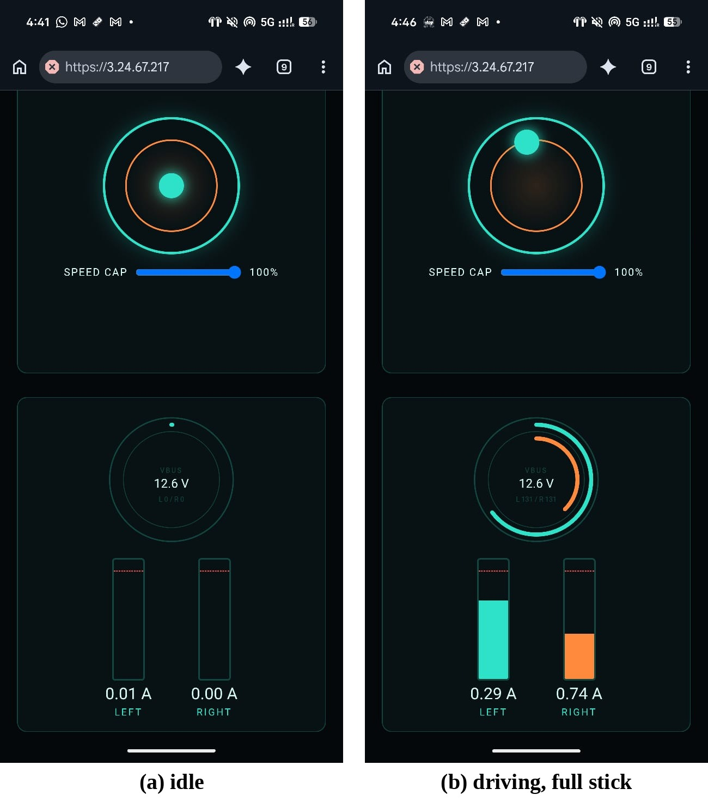
Figure 3 - Live dashboard on a phone with the robot connected through the EC2 broker: (a) idle, 12.6 V, 0.01 / 0.00 A; (b) full stick at 100% cap, applied duty clamped to 131/255, left 0.29 A, right 0.74 A
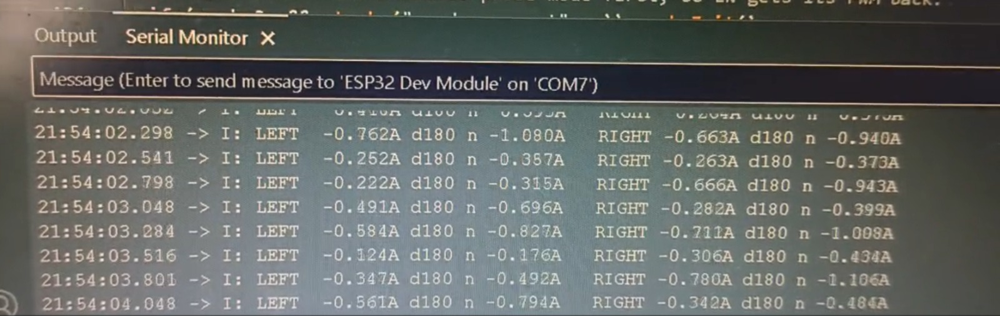
Figure 4 - Arduino Serial Monitor during a run at constant duty 180/255: per-side raw current, duty and duty-normalised current
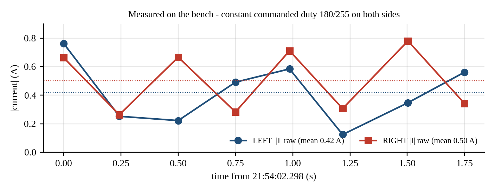
Figure 5 - Measured per-side current at constant commanded duty (data from Figure 4)
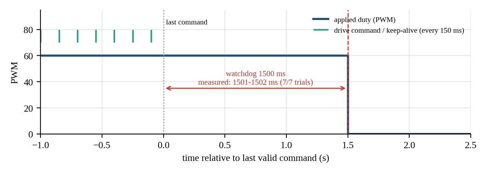
Figure 6 - Drive-command watchdog: measured stop 1501-1502 ms after the last command (7 of 7 trials)
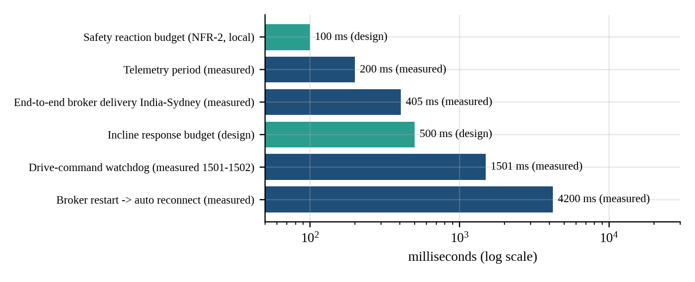
Figure 7 - Design budgets and measured timings (telemetry 200 ms, broker delivery 405 ms, watchdog 1501 ms, reconnect 4200 ms)
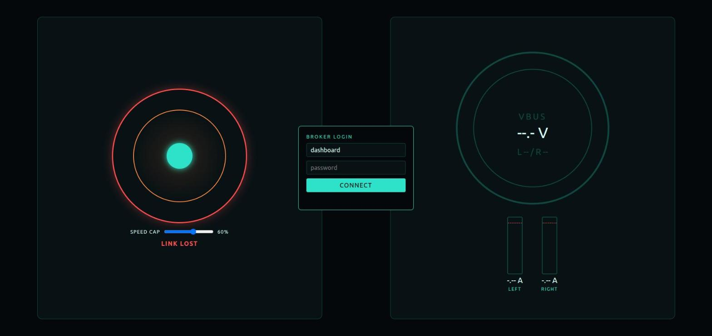
Figure 8 - Dashboard served over HTTPS showing the broker login and the red LINK LOST status ring before sign-in
Open items: the left and right current readings carry opposite signs at equal duty (about -0.6 A and +0.6 A, likely INA219 orientation; the firmware uses the magnitude), and a mid-packet link drop and a Wi-Fi drop-and-recover have not yet been tested on hardware.